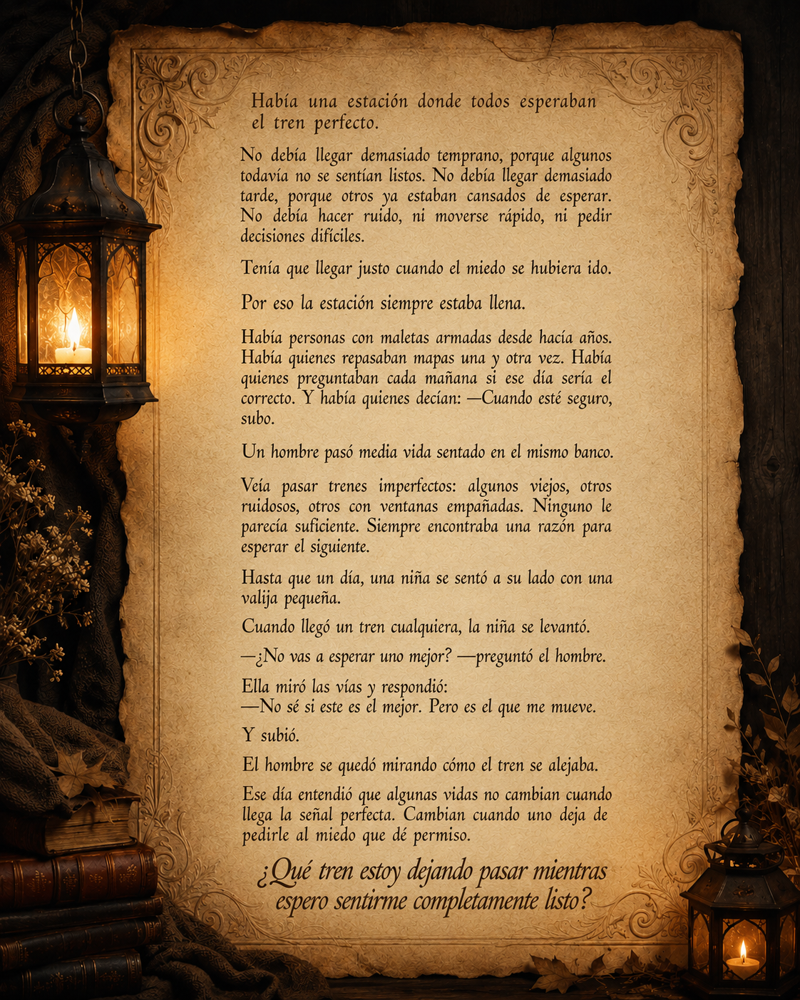

Ver pergamino completo
Ver pergamino completo
01
La máscara de cartón
Para cuando estás cansado de sostener una versión de vos que ya pesa demasiado.
lectura inmersiva · calma · herramientas
Cuando la cabeza no se apaga, entrá un momento al Rincón.
Muestra gratis · audio ambiente · cuentos reflexivos · ejercicios simples
qué es esto
Rincón es una experiencia digital de lectura, calma y herramientas simples para momentos donde la mente pesa más de la cuenta.
No es solo un PDF. Es un espacio para entrar despacio, leer sin apuro, acompañarte con audio ambiente y encontrar palabras, cuentos y ejercicios que te ayuden a ordenar lo que sentís.
Adentro vas a encontrar una lectura completa en formato PDF, una versión inmersiva desde la página, sonidos para acompañar la experiencia, cuentos reflexivos, interludios y herramientas prácticas para volver a vos cuando el ruido se vuelve demasiado.
PDFs completos descargables para leer a tu ritmo.
Lectura inmersiva desde la página.
Audio ambiente para acompañar la experiencia con calma.
Cuentos, interludios y herramientas prácticas para momentos reales.
También es un espacio en crecimiento. Rincón se va actualizando con nuevos contenidos, nuevas pausas y nuevas herramientas.
Está creado para acompañar, no para darte respuestas cerradas. Para esos momentos en los que no necesitás más información, sino una pausa real y un lugar donde volver a escucharte.
cuento gratis
Una lectura breve para esos momentos en los que uno sigue esperando sentirse listo, mientras la vida pasa como trenes que no siempre avisan dos veces.
Podés leerla directamente en el pergamino o activar el narrador para acompañar la pausa.

Si esta historia te dejó una pregunta dando vueltas, la experiencia completa sigue por ese mismo camino:
lecturas, cuentos, audio ambiente y herramientas simples para volver a vos cuando el ruido se vuelve demasiado.
Ver experiencia completa
muestra gratis
Leé una parte y fijate si te toca. Sentí si esta experiencia habla con ese lugar tuyo que muchas veces no encuentra palabras. La versión completa suma lectura inmersiva, audio ambiente, cuentos reflexivos y herramientas prácticas para esos momentos en los que no sabés cómo seguir.
lectura interactiva
Usá los botones para recorrer la muestra, parte de la experiencia digital completa. Un espacio privado en crecimiento, creado para quienes buscan leer, pausar y volver a escucharse.


Página 1 de 10
Es una pequeña guía con herramientas simples para esos momentos en los que la mente se llena de ruido, cuesta ordenar lo que sentís o no sabés por dónde empezar.
Adentro vas a encontrar ejercicios breves para bajar la ansiedad, volver al presente, soltar un poco la carga y dar un primer paso sin exigirte tener todo resuelto.
también incluye herramientas
La experiencia completa de Rincón entre Pensamientos no se queda solo en leer. También incluye herramientas simples para esos momentos en los que necesitás ordenar lo que sentís, bajar el ruido o dar un primer paso sin exigirte de más.
Ver pergamino completo
Para cuando estás cansado de sostener una versión de vos que ya pesa demasiado.
 Ver pergamino completo
Ver pergamino completo
Para esos días en los que la cabeza no se apaga y todo parece demasiado.
 Ver pergamino completo
Ver pergamino completo
Para cuando venís postergando algo importante y no sabés cómo empezar.
Estas son solo algunas puertas de entrada. En la versión completa encontrás más lecturas, interludios y herramientas para acompañar distintos momentos: cansancio emocional, ruido mental, cierres pendientes, soledad, pausa y nuevos comienzos.
cuento incluido
Además de herramientas, la versión completa incluye cuentos e interludios pensados para acompañar esos momentos donde no siempre hay respuestas claras, pero sí una necesidad de volver a mirar hacia adentro.
Muestra breve
Durante mucho tiempo, creyó que cerrar la puerta era una forma de protegerse. No de los demás, sino de todo aquello que no sabía explicar sin romperse un poco.
La habitación no era grande. Tenía una silla, una mesa antigua y una ventana que apenas dejaba entrar la luz. Pero ahí, entre el polvo y el silencio, guardaba pensamientos que nunca se habían animado a salir.
Una noche, cansado de sostener el ruido afuera, se sentó frente a la mesa y dejó de escapar. No encontró una respuesta. Encontró algo más simple: un lugar donde poder escucharse sin tener que fingir.
A veces, sanar no empieza cuando alguien abre la puerta desde afuera. A veces empieza cuando uno deja de tener miedo de entrar a la habitación que venía evitando.
Y esa noche, por primera vez en mucho tiempo, no salió corriendo de sí mismo.
En la versión completa encontrás más cuentos, interludios y pausas para leer cuando necesitás bajar el ruido y volver a vos.
versión completa
Si esta muestra te dejó una pregunta dando vueltas, la versión completa te invita a seguir entrando: lectura en PDF, experiencia inmersiva, audio ambiente, cuentos reflexivos y herramientas para acompañar lo que muchas veces no se sabe cómo explicar.